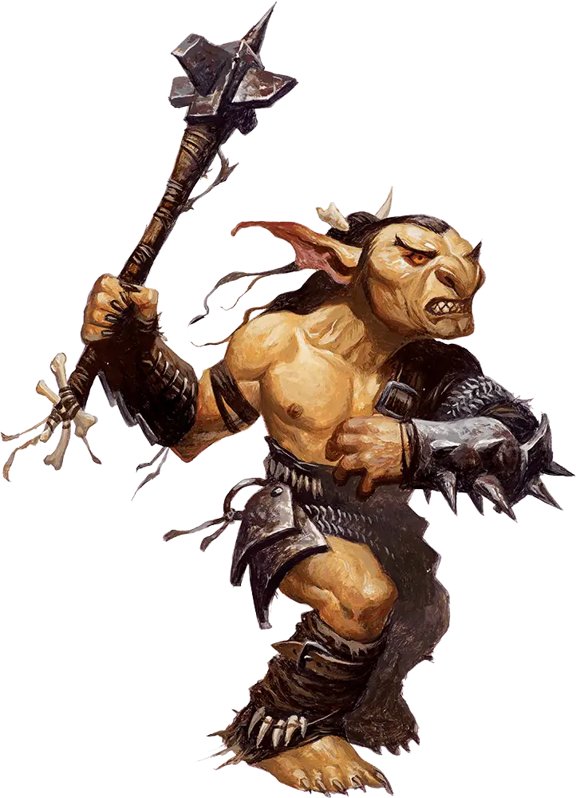
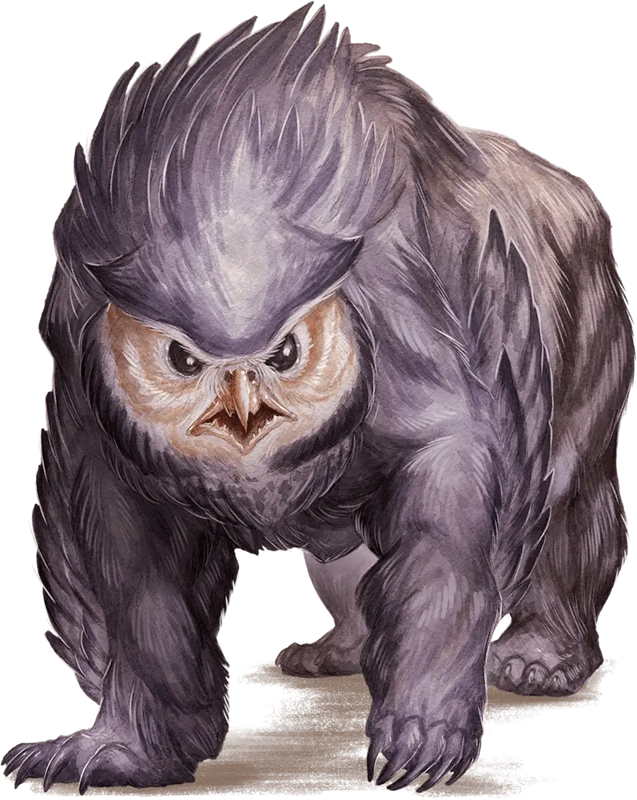
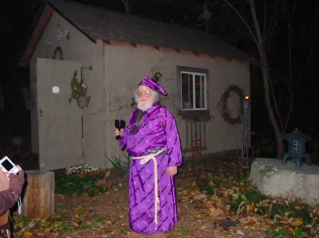

Goblins: La nueva mascota de moda?
Los goblins son vistos como enemigos de todo grupo de aventureros que se aprecie desde hace milenios... Pero
cada vez mas grupos dicen llevarse un "Boblin el goblin" mascota de sus encuentros! Te contamos mas sobre
estos pequeños amigos
Ver mas...

7 formas de saber si tu amigo es un buhoso disfrazado (La 5 te va a helar la sangre)
El buhoso, la pesadilla de varios grupos de aventureros desde los mas novatos hasta los mas valientes. Pero
que pasaría si una de estas criaturas estuviera MUCHO mas cerca de lo que pensás?
Ver mas...

Tomándonos un descanso!
Hola aventureros! Weblink decidió tomarse unas vacaciones por unas dos semanas y nos llevo al equipo de W.W.W
con el! Te contamos como nos fue!
Ver mas...